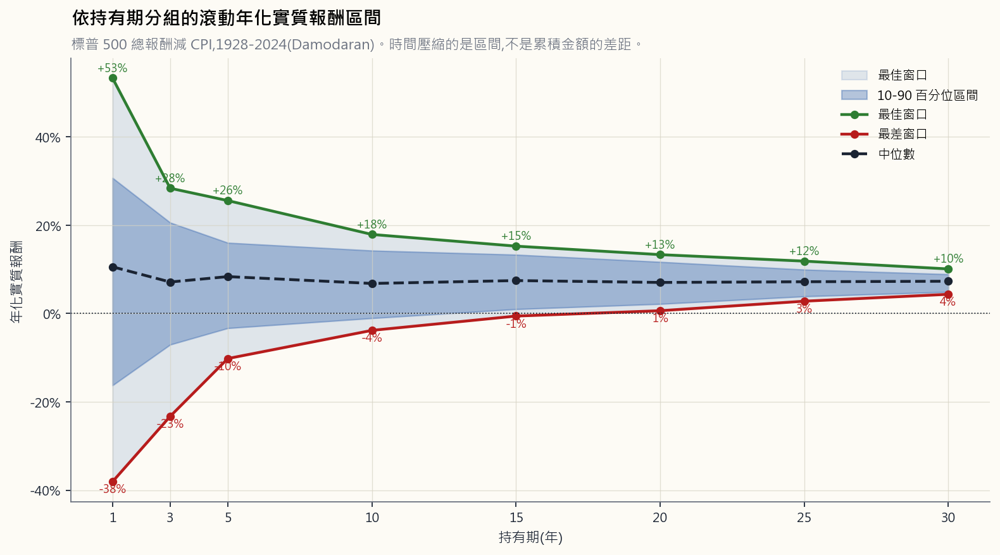
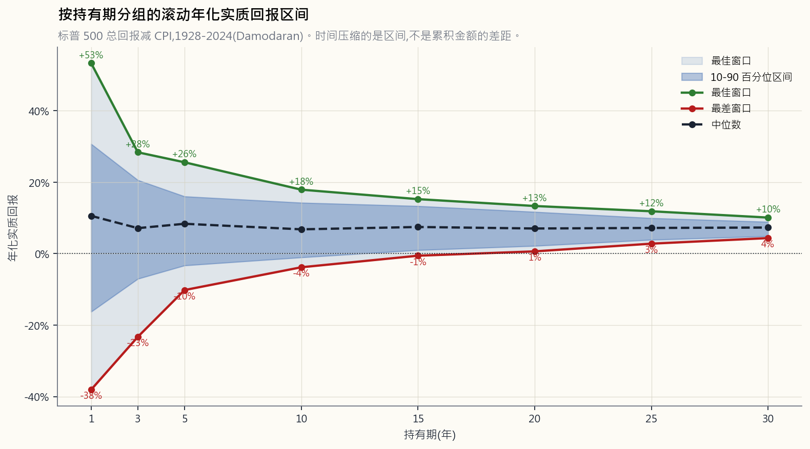

Week 3: Risk and Return — The Two Forces, Honestly Measured
1. Why This Is Important
Last week we landed on a simple prescription: index ETF, automatic monthly transfer, close the app. It works. It also obscures the machinery underneath, and the machinery is what stops you panic-selling the next time the market hands you a 40% drawdown and a dinner-party guest tells you "this time it's different."
Risk and return are the two forces that drive every investment outcome. Most beginners spend all their attention on return — *"how much can I make?" The professional question is the inverse: "how much can I lose, how often, and is that loss survivable?"* If your answer to the second question is "I don't know," you are not investing. You are gambling with extra steps.
This lesson is the foundation for everything that follows. We will look at what risk actually is (and the three things people confuse with it), how to measure it without lying to ourselves, why higher expected return requires higher risk, why the same risk number behaves entirely differently over different horizons, and how the distinction between risk capacity and risk tolerance is the one that gets retirees blown up.
The honest disclaimer up front: **standard textbook treatments of risk assume return distributions look like a bell curve, and they don't.** Markets have fat tails — extreme events happen far more often than the math says they should. We will spend the second half of this lesson on why "5σ event" is a phrase to laugh at, not to plan around.
2. What You Need to Know
2.1 Risk Is Uncertainty of Outcomes — Not Just "Bad"
In everyday English, risk means the chance something bad happens. In finance, risk has a more precise meaning: **risk is the uncertainty of the outcome**. A risky asset is not necessarily one that will lose you money. It is one whose future return you cannot predict.
A three-month US Treasury bill yielding 4.3% is considered nearly risk-free not because the yield is high — it isn't — but because the range of plausible outcomes one quarter from now is essentially "4.3%, plus or minus a fraction of a percent." A single biotech stock is risky because the range one year from now might run from "−90% because the trial failed" to "+400% because the trial succeeded." The T-bill has low uncertainty. The biotech has enormous uncertainty in both directions.
Three things people confuse with risk that aren't:
commonly used — but volatility ≠ risk. A position can be quiet for five years and then blow up in a month (think Long-Term Capital Management, 1998). A position can be loud every day and be structurally bounded (think a deeply hedged options book). Realised price wiggles and risk are not the same thing.
a 50% probability of loss. A coin flip with payouts of −$1 / +$100 has the same 50% probability of loss but is wildly different in risk-adjusted terms. The probability of loss alone tells you nothing about the size of the loss when it comes.
a quantification of anything. Crashes are a feature of equity markets — they happen roughly once per decade, sometimes twice — and an investor who treats every crash as an emergency is going to spend their life selling the bottom.
"Risk comes from not knowing what you're doing." — Warren Buffett
2.2 Standard Deviation — The Workhorse Measure
The most common measure of risk is the standard deviation of returns, often called volatility or "vol." It tells you how widely an asset's actual returns have varied around its mean.
For an asset with average annual return $\mu$ and standard deviation $\sigma$, if returns were normally distributed (a big if; see §2.6):
- About 68% of years would fall in $\mu \pm \sigma$.
- About 95% of years would fall in $\mu \pm 2\sigma$.
- About 99.7% of years would fall in $\mu \pm 3\sigma$.
![Histogram of S&P 500 annual total returns, 1928 through 2024 (Damodaran annual dataset). The empirical mean is roughly 11.5% and the standard deviation is roughly 19.5%. A normal distribution with the same mean and standard deviation is overlaid as a smooth curve. The histogram has visibly fatter tails than the normal curve in <em>both</em> directions — the worst years (1931, 1937, 2008) shown in red on the left tail, and the best years (1933, 1954, 1958) shown in green on the right tail, are far further from the centre than a normal distribution predicts.](image/week03_return_distribution.png)
Three things to read off this chart:
- The centre is roughly 11% per year. That is the long-run nominal
- The standard deviation is roughly 20%. Sixty-eight percent of
- The distribution is wider than a normal curve in both tails.
The headline rule of thumb for asset-class volatility:
| Asset class | Historical annual σ |
|---|---|
| US Treasury bills | ~1% |
| Investment-grade bonds | ~6% |
| US large-cap stocks | ~16–20% |
| US small-cap stocks | ~22–28% |
| Emerging market stocks | ~24–30% |
| Single individual stock | ~30%+ |
| Bitcoin | ~70%+ |
Read the table from the bottom up. Bitcoin is roughly four times as volatile as the S&P 500 — meaning whatever drawdown a bell-curve model says is "extreme" for the index, you should expect roughly four times that for BTC. That is a lot more risk than the headline-friendly "BTC is up 200% this year" suggests.
2.3 Equity Risk Premium — The Compensation for Bearing Risk
The risk premium is the extra return you earn above the risk-free rate for accepting uncertainty. The most-cited number in all of finance is the equity risk premium (ERP): how much more, on average, US stocks return above US Treasury bills.
The inverse framing matters as much as the headline. The textbook calls the T-bill yield the risk-free rate of return. A more honest label — once you measure in purchasing power instead of nominal dollars — is the "return-free risk-free rate": a T-bill guarantees the nominal dollars come back, but it also nearly guarantees you lose ground to inflation, especially in a financial- repression regime where short rates are deliberately held below inflation. Bonds aren't "winning a small amount"; they are certainly losing purchasing power. The ERP is just as well understood as **the discount the volatile asset must offer to clear against an instrument whose downside is the certainty of slow decay.**
The headline numbers also need a regime split, because "long run post-1928" averages four very different monetary regimes into one reassuring number:
| Regime | Window | S&P 500 nominal CAGR | T-bill nominal CAGR |
|---|---|---|---|
| Gold-anchored Bretton Woods | 1928–1971 | ~9.5% | ~2.0% |
| Fiat / disinflation | 1971–2008 | ~11.0% | ~5.7% |
| ZIRP + QE / financial repression | 2009–2024 | ~14.5% | ~0.9% |
| Full sample | 1928–2024 | ~10.5% | ~3.4% |
Read that table carefully. The post-2008 regime — Fed funds pinned at zero from 2009 to 2015 and again 2020–2022, four rounds of quantitative easing, the Fed's balance sheet from $0.9T in 2008 to a peak of $9T in 2022 — produced an S&P CAGR roughly 35% higher than the long-run average, with T-bills returning essentially nothing. Most living retail investors and most index-fund managers built their entire mental model in this single regime. "Stocks return 7% real" is a statement averaged across regimes that have very little to do with each other; the recent regime massively over-paid equity holders while financially repressing the bond holder, and there is no guarantee the next regime resembles either the average or the recent past.
The full-sample arithmetic still impresses: the ~7-point nominal gap compounded over a century turns $1 of T-bills into ~$23 and $1 of stocks into ~$11,000 (real numbers are smaller; the ratio is essentially preserved). Just remember the ratio is built mostly out of three good regimes for stocks; the average should not be confused with the expected value going forward.
Why must the ERP exist? Two equilibrium arguments:
expected return, almost everyone prefers the less volatile one. For investors to willingly hold the volatile one, the price has to fall until the forward expected return is high enough to compensate. That gap is the risk premium.
offered the same expected return, no rational investor would hold stocks; everyone would sell into bonds, prices on stocks would fall, and forward returns would rise — until the gap re-opens. Risk premium is not a moral payment for "being brave"; it is the mechanical equilibrium price of clearing the volatile asset.
A caveat the textbook usually skips: stocks and T-bills are not the same kind of thing, and the model that prices them on a single risk axis hides as much as it reveals. A stock is a perpetual, residual claim on the productive assets and cash flows of a business — its value can grow indefinitely as the business grows. A T-bill is a contractual promise that returns a fixed number of dollars on a fixed date, with no claim on growth and no upside beyond the coupon. "Equally attractive expected returns" comparing these two is comparing apples to a coupon clipped from an apple crate. And the bond side is far less benign than the textbook presents:
- Bond prices are not stable. The 30-year Treasury lost roughly
- **Blue-chip equity is, on a 5-to-10-year window, often less
- A bond locked to maturity carries opportunity cost. Money sat
So treat the "equilibrium price of risk" framing as a useful first lens, not a complete one. The ERP is what the market prices the gap at; whether bonds are actually "safer than blue-chip stocks" for your purposes depends on which kind of risk you are trying to avoid (mark-to-market wiggle, default, purchasing-power loss, sequence-of-returns, opportunity cost) — and these don't all point the same way.
Two cautions, both important:
- The premium is an average over very long horizons. Stocks
- The premium can compress. When stocks have already run up a long
2.4 Systematic vs. Unsystematic Risk
This distinction is the single most important conceptual move in risk management. It determines which risks the market pays you to bear and which risks you are bearing for free.
- Unsystematic (idiosyncratic) risk. Specific to one company, one
- Systematic (market) risk. Affects the whole economy or whole
But the "cannot diversify" line is the canonical CFA answer, and it understates what's actually available. **You can diversify systematic equity risk by holding things that aren't equities.** Long-duration Treasuries rallied as stocks crashed in 2000–02 and 2008. Gold rallied through the 2008 GFC and the 2020 COVID crash. Long-volatility option structures explicitly pay off when equities fall fast. The right way to read "undiversifiable" is therefore undiversifiable inside the equity sleeve — at the multi-asset level, the systematic shock is itself an exposure you can hedge or shape. Week 4 (60/40), Week 6 (gold and commodities), Week 15 (multi-asset construction), Weeks 25–30 (options as exposure tools), and Week 47 (explicit tail-risk hedging) are each a different way of attacking the equity-systematic shock that this paragraph says you "cannot diversify away." The sentence is true only if you've already decided your portfolio is allowed to hold nothing but stocks.
The "free lunch" insight that won Markowitz the Nobel Prize: **since unsystematic risk can be eliminated for free through diversification, the market does not pay you to bear it.** A concentrated five-stock portfolio has much higher total volatility than the index, with the same expected return on the cross-section of all possible five-stock portfolios — but bear in mind unsystematic risk cuts both ways. Some five-stock portfolios in any given decade dramatically beat the index (if four of your five names happened to be Apple, Microsoft, Amazon, Nvidia in 2014); most under-perform substantially; and the average is the index. You aren't "guaranteed to lag" — you are taking on a lottery-ticket distribution around the same mean, where the market doesn't pay you for the spread.
Markowitz's framework is the foundation of **Modern Portfolio Theory (MPT) and the efficient frontier** — the locus of portfolios that maximise expected return for a given variance. Sitting on that frontier, the only risk being borne is systematic; everything below it is leaving free diversification on the table. The full MPT machinery — covariance matrices, mean-variance optimisation, efficient frontier, Capital Market Line — is the toolkit covered in Week 15 (multi-asset construction) and Week 23 (factor investing), with the well-known practical critiques (estimation error in the inputs, fragility to fat tails, breakdown of the covariance matrix in crises). Treat this paragraph as the seed; the formal treatment comes later.
How many names is "diversified"? The Evans & Archer (1968) and Statman (1987) studies — still the standard textbook citations — show the bulk of unsystematic risk reduction comes from the first 15–20 names; the curve of portfolio variance vs number of holdings is steep up to about 20 stocks and almost flat after about 30. Under modern conditions (with mega-cap concentration in the index crowding the names that matter into the top decile), reasonable researchers put the number a bit higher — call it 25–40 names, spread across uncorrelated industries — but the qualitative finding is unchanged: you do not need 500 names to capture ~95% of the diversification benefit, you need *enough names spread across enough industries that no single one moves the portfolio materially*. The S&P 500 buys you the last few percent of marginal diversification; everything north of ~30 well-chosen names is refinement, not breakthrough.
This is the argument for index funds rendered tightly: an index fund holds enough names — and enough sectors — that idiosyncratic risk is essentially zero, leaving you with only the systematic risk that the market actually pays you for. Concentrated stock-picking, unless you have a real edge, is voluntarily accepting a wider spread of outcomes around the same mean. Some pickers will win big. The expected value of being one of them is the same as just buying the index.
2.5 Drawdowns — The Risk That Actually Tests You
Standard deviation is a textbook measure. Maximum drawdown — the peak-to-trough decline of an equity curve — is the measure your nervous system is going to use, whether you like it or not.
Below is the actual S&P 500 drawdown chart from 1950 onward. The shaded peaks are the major bear markets. The number that matters in each case is not the size of the drawdown so much as the *time it took to recover* and the temperament that survival required.

Recovery times (peak-to-new-high), by event:
| Event | Drawdown | Months to bottom | Total round-trip recovery |
|---|---|---|---|
| 1973–74 (oil shock) | −48% | 21 | 7.5 years |
| 1987 Black Monday | −34% | 3 | 2 years |
| 2000–02 dot-com | −49% | 30 | 7 years |
| 2007–09 GFC | −55% | 17 | 5.5 years |
| 2020 COVID | −34% | 1 | 5 months |
| 2022 selloff | −25% | 10 | 2 years |
Two observations from this table that the standard-deviation number does not capture:
- The drawdowns are deeply asymmetric to the up-years. A single
- Recovery time matters as much as drawdown depth. The 2020 COVID
The behavioural lesson is simple. If your investment plan does not survive a 50% drawdown — meaning, you would sell — your plan is already broken. The plan must be built around the drawdown, not despite it.
2.6 Beta — The Slope, Not the Whole Picture
While standard deviation measures total risk, beta measures systematic risk only — the portion of risk that moves with the market.
A formal definition: beta is the slope of the regression of the asset's returns against the market's returns.
$$ \beta_i = \frac{\text{Cov}(r_i, r_M)}{\text{Var}(r_M)} $$
Read the slope, not the formula:
| Beta | What it means |
|---|---|
| 1.0 | Moves with the market — index funds, by construction |
| 1.5 | Moves 50% more than market — typical tech / cyclical stock |
| 0.5 | Moves 50% less — utilities, consumer staples |
| 0.0 | Uncorrelated to market — short-term Treasury bills |
| < 0 | Moves opposite to market — gold sometimes, long volatility |
The Capital Asset Pricing Model (CAPM) uses beta to compute an expected return:
$$ E[r_i] = r_f + \beta_i \cdot (E[r_M] - r_f) $$
In English: an asset's expected return equals the risk-free rate plus the asset's beta times the equity risk premium. CAPM is on every CFA exam and in every textbook. **It is also a description that does not work very well in practice.** Real-world cross-sections of expected return are explained better by other factors (size, value, profitability, momentum) than by beta alone — a finding that launched the entire factor-investing literature, which we cover in Week 23. Treat CAPM as the orthodox starting point that every finance professional understands; treat the factor models as the empirical refinements.
2.7 Time Horizon — Why "Risk" Means Something Different at 1y vs. 30y
One of the most-debated topics in finance is whether stocks become less risky over longer holding periods. The data has a nuanced answer.
Run the historical S&P 500 dataset and compute the worst and best annualised return over rolling holding periods of 1, 5, 10, 20, and 30 years. The picture is striking.

Two true things that look contradictory:
- The range of rolling returns narrows dramatically with horizon.
- *The cumulative* dollar consequence of a bad sequence still
The practical implication: **horizon expands what risk you can afford to bear.** A 25-year-old with a stable income and a 40-year investment horizon can run a much higher equity weight than a 65-year-old with a portfolio that has to fund the next 25 years of groceries. The 25-year-old has time to wait out a 50% drawdown; the 65-year-old does not.
A cautionary tale before you over-trust the rolling-return chart. The US dataset is a survivor. Two contemporary stock markets that did not behave like the S&P 500 are sitting in plain sight:
- Japan, 1989–2024. The Nikkei 225 peaked at 38,915 in December
- China A-shares, 2007–present. The Shanghai Composite peaked
The deeper lesson: **a stock market has to bear some honest relationship to the underlying real economy over the long run, and to the legal and political conditions under which minority shareholders actually get paid.** Studying historical price data in isolation — without asking why a market compounded for a century and whether those conditions still hold — is the central methodological error behind "buy and hold for 30 years" applied to any equity market on the planet. The US market's 100-year compounding rests on specific conditions (rule of law, dollar reserve status, productivity growth, demographic expansion, monetary regime). Some of those conditions are visibly weakening in 2026; the conditions that produced Japan's lost decades and China's locked range are not imaginary, just not American — yet.
That is the sequence-of-returns risk that the next paragraph captures. A retiree who experiences a 1973–74 in the first two years of retirement is permanently impaired — every dollar withdrawn during the drawdown removes shares that don't get to compound back. A retiree who experiences the same drawdown 15 years into retirement is barely affected. **Same drawdown. Same return distribution. Different sequence. Different outcome.**
2.8 Risk Capacity vs. Risk Tolerance — The Mismatch That Kills
One last distinction. It is the one most often missed, and it is the one that actually blows up retail portfolios.
Risk capacity — how much risk you can afford to bear, based on objective conditions:
- Time horizon
- Stability of income
- Net worth relative to lifestyle costs
- Insurance and other buffers
- Whether the portfolio funds your living expenses
- How you actually react when you see your account down 30%
- Whether you can sleep through a bear market
- Whether bad portfolio days affect your relationships, your sleep,
The mismatch quadrant is the dangerous one:
| High capacity | Low capacity | |
|---|---|---|
| High tolerance | Match. Take appropriate risk, sleep fine. | Danger zone. "I can handle volatility" + portfolio funds your rent = one bad year wipes you out. |
| Low tolerance | Education problem — you have the time horizon, but emotion drives you out at the bottom. | Match. Conservative positioning is the right answer. |
The two failure modes:
- High tolerance, low capacity. The 67-year-old retiree who
- Low tolerance, high capacity. The 28-year-old engineer with a
The single most useful question to ask yourself before sizing a position: **"If this position dropped 50% next month, would I be a forced seller?"** If the honest answer is yes, the position is too large. Cut it until the answer is no, regardless of what your "tolerance" tells you.
A fair pushback on the question, because the framing is too passive: if you actually knew a position was going to drop 50% next month, the correct response is not "size smaller and absorb it" — it is *hedge the downside, sell the position, or take the other side of the trade*. The question is a sizing tool, not a prediction tool. And the textbook reflex "you can't time the market" needs the adult version: **day-to-day, the market is approximately a random walk; decade-scale macro regime breaks are a slow-moving train wreck that you can see coming if you are paying attention.** A few recent examples retail investors had a real chance to read:
- 2008 Global Financial Crisis. Bear Stearns blew up in March
- 2020 COVID crash. The first COVID-19 cases in Wuhan were
- 2024 Trump–Iran war scare. US carrier strike groups began
None of these were unknowable in advance. None of them required insider information; the relevant data was on the front page of the Wall Street Journal. "You can't time the market" is correct for the day-to-day noise that dominates 95% of trading sessions; it is lazy when applied to visible, slow-moving regime events. The Week 47 (tail risk) and Level 5 framework rebuild this idea properly: pay attention to macro-level signal, hedge before the event rather than after, and accept that occasionally being early is the cost of doing this at all.
"The market can stay irrational longer than you can stay solvent." — John Maynard Keynes (attributed)
2.9 Howard Marks — Risk as the Probability of Permanent Loss, Not as Volatility
Everything above is the standard quantitative apparatus the profession uses: standard deviation, beta, drawdown distributions, the bell curve, the equity risk premium. Howard Marks — co- founder of Oaktree Capital, author of The Most Important Thing and Mastering the Market Cycle — has spent four decades arguing, correctly, that this entire toolbox confuses one observable proxy for the actual thing.
His core claim, in one sentence: **risk is the probability that something bad happens to your capital, not the wiggle of the price chart on the way there.** A position that swings ±30% intra-year but ends every decade higher is less risky than one that grinds quietly upward for nine years and goes to zero in the tenth — even though the standard-deviation calculation will rank them in the opposite order.
Three Marks ideas worth tattooing on the inside of your eyelids:
observed. The reason 2007 felt safe — to almost everyone — was that risk had been compounding inside the system for years without showing up in volatility. Mortgage spreads were tight, VIX was low, every model said the world was calm. The risk was maximal precisely because it was invisible. By the time it shows up in the volatility number, the trade is already lost. Conversely, the moments of maximum fear are usually moments of minimum risk: forced selling has crushed prices below intrinsic value, the marginal seller has already sold, and the forward expected return is at its highest. Marks formalised this with his risk-distribution diagram:
- The textbook capital-market line plots a single expected
- Marks's diagram replaces each point on that line with a
- The honest reading: **moving right on the risk axis does not
![Howard Marks's risk-distribution diagram. The horizontal axis is risk; the vertical axis is return. The textbook capital-market line is shown as a thin upward-sloping line. Overlaid at each level of risk is a vertical probability distribution — narrow and centred on the line at low risk, progressively wider and more left-skewed as risk rises. At T-bill risk the distribution is a tight spike. At broad-equity risk it is a wide bell with a visible left tail. At venture/speculative risk it is a very wide distribution where the left tail extends to total loss. The diagram makes the point that](image/week03_marks_risk_distribution.png)
not be wiped out.* Marks calls this survival first*. A 50% loss requires a 100% gain to recover. A 90% loss requires a 900% gain. A 100% loss requires a miracle. The asymmetry of loss recovery means that any strategy that can blow up — even with a 1% annual probability — will, on a long enough timeline, blow up. *"In order to win the game, you have to be there at the end."* Position sizing, leverage discipline, and tail-risk awareness are not topics added on top of a return-maximising strategy. They are the prerequisites without which return maximisation is gambling.
decision can have a bad outcome (rolled snake-eyes), and a bad decision can have a good outcome (the drunk who got home safely). Most retail investors evaluate themselves by P&L, which means they reward the bad decisions that happened to work and punish the good decisions that happened to lose. The professional question is *given the information at the time, was the position appropriately sized for its risk-adjusted expected return?* That question is answerable independent of the outcome. P&L is the noisy proxy; process is the signal.
The connection to everything above: **standard deviation, beta, and the bell curve are useful summaries of visible risk in ordinary market regimes.** They are systematically blind to the risk Marks is describing — latent, regime-conditional, asymmetric, and most dangerous when it is most invisible. The honest framework holds both views at once: use the quantitative tools to measure what you can, and use Marks's framing to remember that the number on the screen is not the thing itself, and that *the goal of the exercise is to still be in the game ten years from now.*
"Risk means more things can happen than will happen." — Elroy Dimson, quoted by Howard Marks "The riskiest things are the ones everyone thinks are safe." — Howard Marks "You can't predict. You can prepare." — Howard Marks
3. Common Misconceptions
Misconception 1: "Higher risk always means higher return."
Higher risk means higher expected return *for the asset class as a whole*, on long horizons. It does not mean higher return for any individual position. A single biotech stock is extremely risky and may return nothing if its trial fails. The risk premium applies to diversified bearers of systematic risk; concentrated positions in single names accept enormous idiosyncratic risk that the market does not pay you to bear. Risk and expected return scale together at the asset-class level, not at the single-position level.
More importantly, the goal of an active retail investor is not to take more risk for more return — it is to find **asymmetric trades**: payoffs where the upside is meaningfully larger than the downside, where you are positioned for a fat tail without having to fund it with a fat-tailed downside of your own. The barbell shape (Week 47, Level 5) is the cleanest expression: one end is high-conviction safety with little or no downside; the other end is asymmetric speculation with capped downside (long calls, long volatility, structured option positions) and uncapped upside. "Higher risk = higher return" is the passive paraphrase. The active paraphrase is *find the rare structures where the cap on downside lets the upside compound, and skip the symmetric trades that the textbook is describing.* This course teaches the textbook first because you cannot critique what you do not know — but the long-term goal of the course is the asymmetric trade, not the symmetric one.
Misconception 2: "If I just hold long enough, stocks always go up."
US stocks have always recovered eventually, but "eventually" can mean seven to fifteen years. Japanese stocks peaked in 1989 and did not surpass that level until 2024 — a 35-year wait. There is also a survivorship bias problem: we study the US market because it became the most successful equity market of the 20th century. China, Russia, Argentina, Egypt all had thriving exchanges in 1900 and delivered −100% real returns over the subsequent century. "Stocks for the long run" is true on the measured sample. The sample is US-conditional.
Misconception 3: "Standard deviation captures all the risk."
It captures Gaussian risk under the assumption that returns are normally distributed. They are not. Markets have fat tails — extreme moves happen far more often than the bell-curve model predicts. The 2008 crash was, by Gaussian arithmetic, a roughly 5σ event, which a normal distribution says should occur once every ~14,000 years. It happened. So did 1987 (a 22σ event under the prevailing models). The standard deviation of the body of the distribution does not predict the size or frequency of the tails. This is why we will spend Week 47 on tail-risk hedging instead of trusting the bell curve to size positions.
Misconception 4: "Bonds are safe."
Bonds are less volatile than stocks. They are not risk-free. Long bonds lost roughly 30% of their value in 2022 alone — that is a larger drawdown than the median equity bear market. Bond holders also face inflation risk (a 4% bond in a 6% real-inflation environment loses purchasing power even while paying a positive nominal yield) and credit risk (the issuer defaults). The 1982–2020 bond bull market trained an entire generation of investors and advisors to think of "bonds" and "safety" as synonyms. They are not, and the regime that made them feel synonymous has reversed.
Misconception 5: "Low realised volatility means low risk."
Sometimes. Sometimes not. Bernie Madoff's fund showed implausibly low volatility and steady returns from 1992 onward — *because the returns were fabricated*. Long-Term Capital Management's strategy ran with extremely low realised volatility for years before blowing up over a single quarter in 1998 and requiring a Federal Reserve- coordinated bailout. Realised volatility is one observation window; risk is the full distribution of possible outcomes, including the ones that haven't happened yet. Low vol can be a trap — the calm before the regime break.
Misconception 6: "Risk tolerance is a fixed personality trait."
It moves with experience, with portfolio size, and with life stage. A 25-year-old who has never seen a bear market often discovers, in their first one, that the tolerance they self-reported on their brokerage's questionnaire was theoretical. The same person ten years later, having watched two drawdowns recover, sleeps through a third without thinking about it. Tolerance is built, not declared.
**Misconception 7: "Diversification means owning lots of different funds."**
Diversification is about owning uncorrelated exposures. Owning ten US large-cap funds run by ten different managers gives you almost nothing — they all hold roughly the same names with the same betas and they all fall together. Owning a US equity fund, a long Treasury fund, gold, and a long-volatility hedge gives you real diversification because the assets respond differently to the same macro shocks. Number-of-funds is a vanity metric. Number-of-distinct- risk-factors is the real one.
4. Q&A
**Q1: If I can never get rid of systematic risk, why bother diversifying within equities?**
A: To eliminate the unsystematic risk you are not paid to bear. The textbook example — "a five-stock portfolio has the same expected return as the index but more total risk" — comes out of the Evans & Archer (1968) and Statman (1987) studies, where they computed the average portfolio variance across thousands of randomly drawn five-, ten-, twenty-stock portfolios. Average is the operative word. In reality, no individual five-stock portfolio has the same return as the index — most under-perform, a small minority massively over-perform, and only the cross-sectional mean equals the index. The statistical argument is correct on the expectation; the realised path of any single five-stock portfolio is a draw from a much wider distribution. The market doesn't pay you for sitting in that wide distribution. Hold ~25–40 well-spread names (or just buy the index) and you collect ~95% of the diversification benefit without the lottery-ticket variance.
**Q2: Bitcoin's volatility is 70%+. Does the same risk-premium logic apply?**
A: In principle yes — bitcoin's expected return must be high enough to clear at its volatility. In practice, bitcoin's expected return is not knowable from price history alone because the asset is too young and its monetary regime is still being negotiated. Standard risk-premium math uses 100 years of data to triangulate the equity premium — and that itself is a weaker exercise than it sounds. The equity from 100 years ago, 50 years ago, and today is materially not the same security: post-1971 the dollar left the gold standard and the entire monetary regime changed; post-2008 zero-rate policy and QE produced a structural bid for risk assets that did not exist in earlier decades; tax law, market microstructure (electronic trading, ETFs, 0DTE options), and the dominant marginal participant (passive flow vs active stock-picking) have all flipped within the sample. Aggregating across regime changes that fundamental gives you an average over different securities, not a stable estimate of the same one. For bitcoin you have 15 years, of which the first 8 were near-zero adoption and the last 7 are the entire price history. Apply the framework, but don't pretend the standard error on either estimate is small.
Q3: How do I estimate my own risk tolerance honestly?
A: Two steps, in order. First, take an honest capacity assessment: horizon, income stability, dependence of living expenses on the portfolio. Second, take a small allocation to a volatile asset and see how you actually feel during a drawdown. Self-reported risk tolerance from a brokerage questionnaire correlates poorly with behaviour in a real bear market. Tolerance is observed, not declared.
**Q4: Why is 60/40 the conventional portfolio if bonds aren't a reliable inflation hedge anymore?**
A: 60/40 was built around a specific 40-year window (1982–2020) in which (a) bonds yielded above inflation and (b) bonds rallied when stocks fell. Both broke in 2022, when stocks and bonds fell roughly 20% together. The conventional 60/40 is a legacy allocation matching a legacy regime. Modern equivalents replace some or all of the bond sleeve with cash, gold, and long-volatility hedges (Week 47, Level 5).
**Q5: What is the most useful single risk number for a retail investor?**
A: Maximum drawdown of the strategy you are running, sized to your portfolio. Multiply your portfolio value by 0.5 (a plausible once-per-decade equity drawdown), and ask whether the dollar amount that you would see in red on the screen would force you into bad decisions. If yes, you are over-allocated to risk. If no, you can proceed.
**Q6: Why does the textbook keep using the standard deviation if it's not great?**
A: Because it has nice mathematical properties (additive under linear combinations, easy to estimate from data, well-behaved in models), not because it captures the risk that matters. The standard deviation is a useful summary of the central body of the distribution. It is inadequate as a descriptor of the tails, which is exactly where the losses you remember actually live. The honest professional uses standard deviation plus drawdown plus tail-event analysis — never any one alone.
Q7: Is volatility a good or bad thing for an investor?
A: For a buyer who is dollar-cost averaging in over years, mild volatility is mildly good (you buy at a discount during dips). For a holder who is sitting on accumulated wealth, volatility is mostly the cost of doing business — not "bad" in expectation, but the emotional load you carry. For a seller in decumulation, volatility is genuinely costly because of sequence-of-returns risk. The same number means different things at different life stages.
And once options enter the toolkit, **volatility itself is an asset class** — not just a risk to be borne. Implied volatility on listed options trades and re-prices independently of the underlying; a long-volatility position can compound through equity drawdowns that decimate buy-and-hold portfolios. Weeks 25–30 introduce the option mechanics, Week 29 covers the Greeks (vega is the direct exposure to volatility), and Week 47 builds a long-volatility tail-hedge sleeve as a permanent allocation rather than a tactical trade — Week 47 introduces a Dragon-portfolio-inspired shape that makes long-volatility a permanent sleeve. "Vol is good or bad?" is the wrong question once you can buy and sell it directly; the right question is *what regime is vol in, and what side am I on*.
Q8: What does "fat tails" actually mean for sizing my positions?
A: Whatever drawdown a normal-distribution model says is "extreme" — size as if a drawdown twice that depth is genuinely possible. The 2008 GFC was a 5σ event under the prevailing risk models; planning to survive a 5σ event of the right magnitude (so, ~50% on US large cap rather than ~25% the model predicted) is what kept investors in the game. The shorthand: *plan for half-off, every decade, no warning.*
**Q9: How does a "barbell" shape relate to standard deviation?**
A: The barbell exploits the fat-tailed distribution. By holding high-conviction safety on one end (short-Treasuries, gold, cash) and asymmetric speculation with capped downside on the other (long calls, long-vol structures), the resulting portfolio has a higher arithmetic standard deviation than a passively-diversified core but a better drawdown profile and a better response to tail events. The standard deviation alone makes it look "riskier"; the drawdown distribution shows it actually isn't. This is a Week 14 / Level 5 topic but the framing matters for how you read this lesson.
Q10: How does this lesson connect to the rest of the course?
A: Risk and return are the foundation under everything that follows. Week 4 (60/40) and Week 11 (rebalancing as behavioural discipline) are exercises in shaping the risk profile of a multi-asset portfolio. Week 13 onwards (long/short, pair trading) are about removing systematic risk and isolating specific bets. Weeks 25–30 (options) are the toolkit for expressing risk asymmetrically. Week 47 (tail risk) is the explicit treatment of the fat-tail problem this lesson opened. Every subsequent strategy will be evaluated on its risk profile — not just its return.
The interactive demo on the website extends this lesson with a holding-period explorer: a slider lets you choose any rolling window from 1 to 30 years, and the chart shows the historical distribution of annualised real returns for that window — best, worst, median, and the odds of ending up below zero. The shape of the distribution at 1 year and 20 years is essentially the §2.7 chart, but you can slide between them and watch the tails close.
第三週：風險與回報——兩股力量，誠實衡量
1. 為什麼這很重要
上週我們得出一個簡單的結論：交易所買賣基金指數基金、每月自動轉賬、關掉應用程式。這個方法有效。但它也掩蓋了底層的運作機制，而正是這套機制，決定了當市場給你一個40%的回撤、晚宴上的朋友告訴你「這次不一樣」時，你是否會恐慌性拋售。
風險與回報是驅動每一個投資結果的兩股力量。大多數初學者把所有注意力放在回報上——「我能賺多少？」專業人士的問題正好相反：「我最多能虧多少、多久發生一次、這種虧損是否能承受？」如果你對第二個問題的回答是「我不知道」，那你不是在投資，而是在用更複雜的方式賭博。
這一課是後續所有內容的基礎。我們將探討風險究竟是什麼（以及人們常常混淆的三件事）、如何在不自欺欺人的情況下衡量風險、為什麼較高的預期回報必然伴隨較高的風險、為什麼相同的風險數值在不同時間跨度下表現截然不同，以及為什麼風險承受能力與風險承受意願之間的區別，是讓退休人士資產歸零的那個關鍵。
先坦誠說明一點：標準教科書對風險的處理假設回報分佈呈鐘形曲線，但實際並非如此。 市場存在肥尾效應——極端事件發生的頻率遠比數學預測的要高。本課後半部分將深入探討為什麼「5σ事件」是一句值得嘲笑的話，而不是用來規劃的依據。
2. 你需要了解的知識
2.1 風險是結果的不確定性——不只是「壞事」
在日常英語中，風險意味著某件壞事發生的可能性。在金融領域，風險有更精確的含義：風險是結果的不確定性。一個風險資產不一定會讓你虧錢，而是一個你無法預測未來回報的資產。
三個月期美國國債的收益率為4.3%，被認為幾乎無風險，並非因為收益率高——它並不高——而是因為一個季度後可能出現的結果範圍基本上是「4.3%，加減幾個基點」。一隻個別生物科技股票就存在風險，因為一年後的結果範圍可能從「臨床試驗失敗導致下跌90%」到「試驗成功帶來上漲400%」。國債的不確定性低，生物科技股的雙向不確定性巨大。
人們常將以下三件事與風險混為一談，但它們並非風險本身：
「風險源於不知道自己在做什麼。」 ——沃倫·巴菲特
2.2 標準差——最常用的衡量工具
最常用的風險衡量指標是回報的標準差，通常稱為波動性或「vol」。它告訴你一個資產的實際回報圍繞其均值波動的幅度。
對於平均年回報為$\mu$、標準差為$\sigma$的資產，如果回報呈正態分佈（這是個很大的假設；詳見§2.6）：
- 約68%的年份結果落在$[\mu - \sigma,\ \mu + \sigma]$區間。
- 約95%的年份結果落在$[\mu - 2\sigma,\ \mu + 2\sigma]$區間。
- 約99.7%的年份結果落在$[\mu - 3\sigma,\ \mu + 3\sigma]$區間。
從這張圖可以讀出三點：
- 中心值約為每年11%。 這是標準普爾500指數的長期名義總回報平均值。扣除通脹後的「實際」數字接近7%——而教科書中8%的平滑承諾，與聖誕老人的存在有同等的可信度。
- 標準差約為20%。 68%的年份結果落在−9%至+30%之間。要按範圍規劃，而非按平均值。
- 分佈的兩端均比正態曲線更寬。 1931年的−44%、2008年的−37%、1933年的+54%、1954年的+52%，在鐘形曲線模型下均不應出現，但它們確實發生了。市場存在肥尾效應。
| 資產類別 | 歷史年度標準差 |
|---|---|
| 美國國債 | 約1% |
| 投資級債券 | 約6% |
| 美國大型股 | 約16–20% |
| 美國細價股 | 約22–28% |
| 新興市場股票 | 約24–30% |
| 單一個股 | 30%以上 |
| 比特幣 | 70%以上 |
從下往上讀這張表。比特幣的波動性約為標準普爾500指數的四倍——這意味著鐘形曲線模型認為指數的「極端」回撤，在比特幣身上預計要乘以四倍。這比「今年比特幣上漲200%」的頭條要體現出多得多的風險。
2.3 股權風險溢價——承擔風險的補償
風險溢價是你接受不確定性、在無風險利率基礎上額外獲得的回報。金融界最被廣泛引用的數字是股權風險溢價（ERP）：美國股票平均比美國國債多出多少回報。
1928年以來的長期數據顯示，這個數字約為每年5–7%。以國債長期均值約3.4%、標準普爾500指數長期均值約11%計算，差距約為7–8個百分點的名義回報——這個差距複利一個世紀後，國債的1美元變成約23美元，而股票的1美元變成約11,000美元（名義美元計；實際數字更小，但比率基本不變）。
為什麼股權風險溢價必然存在？兩個均衡論點：
兩點重要提示：
- 溢價是非常長期視野下的平均值。 任何單一年份，股票的表現都可能不及國債。股權風險溢價是你在國債跑贏的那些年份堅持持有股票的回報。
- 溢價可以收窄。 當股票已大幅上漲後，未來預期回報會下降；當前股價所隱含的溢價可能遠小於歷史均值。Robert Shiller的周期調整市盈率（CAPE）是量化這一現象的常用工具。在2026年CAPE處於30多倍的高位時，隱含的未來股權風險溢價更接近3–4%，而非7%。這不是預測未來十年一定表現不佳——而是提醒你，歷史均值與當前預期值是不同的統計量。
2.4 系統性風險與個別風險
這個區別是風險管理中最重要的概念性突破。它決定了哪些風險是市場付費讓你承擔的，哪些是你白白承擔的。
- 個別（非系統性）風險。 特定於某一公司、行業或倉位。例如：行政總裁醜聞、產品召回、單一工廠火災、針對某公司的監管行動、礦難。分散投資可以消除這種風險。 持有500隻股份而非5隻，任何一隻的行政總裁醜聞對你的投資組合的影響只是零點幾個百分點，而非20%。
- 系統性（市場）風險。 影響整個經濟或整個市場：經濟衰退、利率變動、通脹、戰爭、疫情。你無法通過分散投資消除這種風險。 即使是完全分散的股票投資組合，在1929年、1973–74年、2008年或2020年也會下跌35–55%。系統性風險是市場付費讓你承擔的，以股權風險溢價為補償。
這就是指數基金論點用一句話的表達：指數基金持有足夠多的股份，使個別風險基本歸零，只剩下市場實際付費讓你承擔的系統性風險。集中選股，除非你真的有優勢，就是主動承擔你得不到報酬的風險。
2.5 回撤——真正考驗你的風險
標準差是教科書的衡量指標。最大回撤——資產淨值從峰值到谷值的跌幅——才是你的神經系統會採用的衡量指標，不管你喜不喜歡。
下圖是1950年以來標準普爾500指數的實際回撤圖。陰影峰值區域是主要的熊市。每個案例中最重要的數字，不是回撤的幅度，而是恢復所需的時間以及在此期間所需的心理承受力。
恢復時間（從峰值到創新高），按事件：
| 事件 | 回撤幅度 | 見底月數 | 完整往返恢復時間 |
|---|---|---|---|
| 1973–74年（石油危機） | −48% | 21 | 7.5年 |
| 1987年黑色星期一 | −34% | 3 | 2年 |
| 2000–02年科網股泡沫 | −49% | 30 | 7年 |
| 2007–09年全球金融危機 | −55% | 17 | 5.5年 |
| 2020年新冠疫情 | −34% | 1 | 5個月 |
| 2022年拋售 | −25% | 10 | 2年 |
從這張表中可以觀察到兩點，是標準差數字無法體現的：
- 下跌年份相對於上漲年份具有深度不對稱性。 單次−48%的跌幅需要+92%才能回本。將好年份和壞年份對稱平均的鐘形曲線模型完全忽略了這一點。
- 恢復時間與回撤深度同樣重要。 2020年的新冠崩盤與1987年崩盤規模相當——但1987年花了兩年恢復，2020年只用了五個月。美聯儲的主動干預是其機械原因。一個在1973–74年退休並進行提現的投資者，必須在投資組合未能恢復的情況下生活七年半，同時還需從中提取收入。相比2020年五個月反彈期間的相同回撤，這是完全不同的問題。
2.6 貝塔——斜率，而非全貌
標準差衡量的是總體風險，而貝塔只衡量系統性風險——隨市場波動的那部分風險。
正式定義：貝塔是資產回報對市場回報回歸分析的斜率。
$$ \beta_i = \frac{\text{Cov}(r_i, r_M)}{\text{Var}(r_M)} $$
讀懂斜率，而非公式：
| 貝塔 | 含義 |
|---|---|
| 1.0 | 與市場同步波動——指數基金，定義如此 |
| 1.5 | 波動幅度比市場多50%——典型的科技股/周期性股票 |
| 0.5 | 波動幅度比市場少50%——公用事業股、必需消費品股 |
| 0.0 | 與市場不相關——短期國債 |
| < 0 | 與市場反向波動——黃金有時如此，長波動性倉位亦然 |
資本資產定價模型（CAPM）使用貝塔計算預期回報：
$$ E[r_i] = r_f + \beta_i \cdot (E[r_M] - r_f) $$
用中文表達：一個資產的預期回報等於無風險利率，加上該資產的貝塔乘以股權風險溢價。資本資產定價模型出現在每一份特許金融分析師考試和每一本教科書中。但它在實踐中效果並不理想。 預期回報的實際截面，由其他因子（規模、價值、盈利能力、動量）解釋得更好，而非單靠貝塔——這一發現催生了整個因子投資文獻，我們將在第23週詳細介紹。將資本資產定價模型視為每位金融專業人士都理解的正統起點；將因子模型視為其實證上的改進。
2.7 時間跨度——為什麼「風險」在1年與30年的含義截然不同
金融界最具爭議的話題之一，是股票在較長持有期內是否會變得風險較低。數據給出了一個微妙的答案。
以歷史標準普爾500指數數據，計算1、5、10、20和30年滾動持有期的最差和最佳年化回報。結果頗為驚人。
兩個看似矛盾、但同樣成立的事實：
- 滾動回報的範圍隨時間跨度大幅收窄。 在1年期，從−38%到+52%，歷史上都曾出現。在30年期，菜單收窄至年化約+3%至+10%。到了30年的時間跨度，「股票一向賺錢」就歷史而言是站得住腳的說法。
- 不良回報序列的累積美元後果仍會複利放大。 年化「只有」+3%實際回報的30年期，與年化+9%的30年期相比，累積財富差異巨大。時間收窄的是回報率範圍，而非累積財富的差距。
這就是下一段要談的回報序列風險。一個在退休最初兩年就遭遇1973–74年情境的退休人士，會遭受永久性損害——在回撤期間提取的每一元，都是無法再複利增長的股份。一個在退休15年後才遭遇同樣回撤的退休人士，所受影響微乎其微。同樣的回撤，同樣的回報分佈，不同的序列，不同的結果。
2.8 風險承受能力與風險承受意願——致命的錯配
最後一個區別。這是最常被忽視的，也是真正讓散戶投資組合崩潰的那個。
風險承受能力——你在客觀條件下能夠承受的風險：
- 時間跨度
- 收入穩定性
- 淨資產相對於生活成本
- 保險及其他緩衝
- 投資組合是否支撐日常生活開支
- 看到賬戶下跌30%時的真實反應
- 能否在熊市中安然入睡
- 投資組合表現不佳的日子是否影響你的人際關係、睡眠和工作
| 承受能力高 | 承受能力低 | |
|---|---|---|
| 承受意願高 | 匹配。 承擔適當風險，安然入睡。 | 危險地帶。 「我能承受波動性」+投資組合支撐你的租金=一個壞年份讓你破產。 |
| 承受意願低 | 認知問題——你有時間跨度，但情緒驅使你在底部離場。 | 匹配。 保守的倉位是正確答案。 |
兩種失敗模式：
- 承受意願高，承受能力低。 一位67歲的退休人士，眼看2009–2024年大牛市後決定自己相信股票。他現在100%持有股票，每年提取4%維持生活，然後遭遇30%的回撤，被迫在底部賣出股份以支付日常開支；那些股份再也無法為他恢復。再撐三個壞年份，投資組合就永久受損。這是散戶退休人士最常見的崩盤方式——把承受意願當作承受能力，而兩者從來不是同一個問題。
- 承受意願低，承受能力高。 一位28歲的工程師，有20年的時間跨度和不錯的薪水，卻把儲蓄放在高息儲蓄賬戶裡，因為「我不信任市場」。她有能力承受50%的回撤——每兩週都有薪金入賬，不受市場影響。她所缺乏的，是讓她能夠坐穿一次回撤的經驗。解決方法不是「更勇敢一點」，而是逐步增加敞口：先小倉位、親歷一次回撤、看它恢復、再加倉、不斷重複。隨時間建立承受意願。
「市場保持非理性的時間，可以比你保持償付能力的時間更長。」 ——約翰·梅納德·凱恩斯（轉述）
3. 常見誤解
誤解一：「更高的風險一定意味著更高的回報。」
更高的風險意味著整個資產類別在長期視野下的預期回報更高。它並不意味著任何個別倉位的回報更高。一隻個別生物科技股票風險極高，若臨床試驗失敗可能一無所獲。風險溢價適用於系統性風險的分散化承擔者；集中持有單一股份，承受的是大量個別風險，而市場不會為此付費。風險與預期回報的正比關係存在於資產類別層面，而非單一倉位層面。
誤解二：「只要持有夠長時間，股票一定會上漲。」
美國股票最終都恢復了，但「最終」可能意味著七到十五年。日本股票在1989年見頂，直到2024年才重新超越那個水平——足足等待了35年。此外還有倖存者偏差問題：我們研究美國市場，是因為它成為了20世紀最成功的股票市場。中國、俄羅斯、阿根廷、埃及在1900年都有繁榮的交易所，卻在隨後一個世紀帶來了-100%的實際回報。「長期持有股票」在測量樣本上成立，而這個樣本是以美國為條件的。
誤解三：「標準差能捕捉所有風險。」
它捕捉的是假設回報呈正態分佈的高斯式風險。但實際回報並非正態分佈。市場存在肥尾效應——極端波動發生的頻率遠超鐘形曲線模型的預測。按高斯算術，2008年的崩盤大約是一個5σ事件，而正態分佈顯示這種事件每約14,000年才應發生一次。它發生了。1987年也發生了（在當時模型下是一個22σ事件）。分佈主體的標準差無法預測尾部事件的規模或頻率。這正是我們將在第47週深入探討尾部風險對沖、而非依賴鐘形曲線來確定倉位規模的原因。
誤解四：「債券是安全的。」
債券的波動性比股票更低。它並非沒有風險。長期債券僅在2022年就損失了約30%的價值——這比中位數股票熊市的回撤還要大。債券持有人還面臨通脹風險（在6%實際通脹環境下，4%的債券即使支付正名義收益率，也在喪失購買力）和信用風險（發行人違約）。1982–2020年的債券牛市讓整整一代投資者和顧問把「債券」和「安全」視為同義詞。它們並非如此，而那個讓兩者感覺等同的政策環境已然逆轉。
誤解五：「已實現波動性低意味著風險低。」
有時如此，有時不然。伯納德·麥道夫的基金從1992年起呈現出低得不可思議的波動性和穩定回報——因為那些回報是捏造的。長期資本管理公司的策略多年來已實現波動性極低，然後在1998年的單個季度內崩潰，需要美聯儲協調的救援行動。已實現波動性是一個觀察窗口；風險是所有可能結果的完整分佈，包括那些尚未發生的。低波動性可能是陷阱——平靜的表象之下，可能是政策環境的斷裂前夕。
誤解六：「風險承受意願是固定的性格特徵。」
它隨著經驗、投資組合規模和人生階段而變化。一個從未經歷過熊市的25歲人，往往在第一次熊市中發現，自己在券商問卷上自我申報的承受意願只是理論上的。同一個人十年後，親歷兩次回撤並看到恢復，第三次就能毫不在意地睡著。承受意願是培養出來的，不是宣告出來的。
誤解七：「分散投資意味著持有很多不同的基金。」
分散投資是關於持有不相關的風險敞口。持有十隻由十位不同基金經理管理的美國大型股基金，幾乎毫無意義——它們持有的股份基本相同，貝塔值相似，且同時下跌。持有一隻美國股票基金、一隻長期國債基金、黃金和長波動性對沖，才能提供真正的分散投資，因為這些資產對相同的宏觀衝擊反應各異。基金數量是一個虛榮指標，真正有意義的是不同風險因子的數量。
4. 問與答
問題1：如果我永遠無法消除系統性風險，為什麼還要在股票內部分散投資？
答：為了消除你不應免費承擔的個別風險。持有500隻股份而非5隻，將個別風險降至接近零，只剩下股權溢價補償你的系統性風險。五股投資組合的總體風險更高，但預期回報與指數相同——多出來的風險是你在反向享用免費午餐。
問題2：比特幣的波動性超過70%，同樣的風險溢價邏輯適用嗎？
答：理論上是的——比特幣的預期回報必須足夠高，才能以其波動性實現出清。實際上，比特幣的預期回報無法單從價格歷史推斷，因為這個資產太年輕，其貨幣機制仍在形成中。標準風險溢價計算使用100年的數據來推算股權溢價；比特幣只有15年的歷史，前8年幾乎零採用，後7年才是完整的價格歷史。可以應用這個框架，但不要假裝估算的標準誤差很小。
問題3：如何誠實評估自己的風險承受意願？
答：按順序做兩步。第一步，進行客觀的承受能力評估：時間跨度、收入穩定性、生活開支對投資組合的依賴程度。第二步，對某個波動性資產進行小倉位配置，看看自己在回撤中的真實感受。券商問卷上的自我申報風險承受意願與真實熊市中的行為相關性很低。承受意願是觀察出來的，不是申報出來的。
問題4：如果債券不再是可靠的通脹對沖工具，為什麼60/40仍是傳統投資組合？
答：60/40建立在一個特定的40年窗口（1982–2020年）之上，在此期間（a）債券收益率超過通脹，（b）股票下跌時債券上漲。這兩點在2022年同時失效，當時股票和債券同時下跌約20%。傳統的60/40是配合舊政策環境的傳承式資產配置。現代替代方案將部分或全部債券配置替換為現金、黃金和長波動性對沖（第47週，第五級）。
問題5：對散戶投資者而言，最有用的單一風險數字是什麼？
答：最大回撤，以你實際運行的策略、按你的投資組合規模計算。將你的投資組合價值乘以0.5（一個大約每十年一次的可能股票回撤），然後問自己，如果屏幕上出現那個紅色的美元數字，是否會迫使你做出錯誤決定。如果是，你的風險配置過高。如果不是，你可以繼續。
問題6：既然標準差並不理想，教科書為什麼還在用？
答：因為它具有良好的數學特性（在線性組合下可加、易從數據估算、在模型中表現良好），而非因為它能捕捉真正重要的風險。標準差是分佈主體的有用概括，但作為尾部的描述者，它是不足夠的——而你所記住的那些損失，恰恰發生在尾部。誠實的專業人士同時使用標準差、回撤和尾部事件分析——而非單獨依賴其中任何一個。
問題7：波動性對投資者來說是好事還是壞事？
答：對買入階段採用平均成本法、多年持續投入的投資者而言，溫和的波動性稍有好處（在回調時以折扣價買入）。對坐擁累積財富的持有者而言，波動性基本上是做生意的成本——在預期上不「壞」，但是你需要承受的情緒負荷。對處於提現階段的賣出者而言，波動性因回報序列風險而具有真實的代價。同一個數字在不同人生階段意義各異。
問題8：「肥尾效應」對確定我的倉位規模有什麼實際意義？
答：不管正態分佈模型說什麼是「極端」回撤，請把實際規劃的回撤深度設為其兩倍。2008年的全球金融危機，在當時的風險模型下是一個5σ事件；計劃好承受相應規模的5σ事件（對美國大型股而言約為50%，而非模型預測的約25%），才能讓投資者在危機後仍能繼續持有。速記法：每十年一次、腰斬、無任何警告，請為此做好規劃。
問題9：「啞鈴型」策略與標準差有何關係？
答：啞鈴型策略正是利用肥尾分佈。通過一端持有高度確定的安全資產（短期國債、黃金、現金），另一端持有下行有限的不對稱投機（認購期權、長波動性結構），所形成的投資組合在算術標準差上比被動分散化的核心倉位更高，但在回撤特性和對尾部事件的反應上更佳。單看標準差，它顯得「風險更高」；看回撤分佈，它實際上並非如此。這是第14週/第五級的主題，但這個框架有助於你理解本課。
問題10：這一課與課程其他部分有何關聯？
答：風險與回報是後續所有內容的基礎。第4週（60/40）和第7週（再平衡）是塑造多資產投資組合風險特性的練習。第13週起（多空、配對交易）是關於消除系統性風險、隔離特定賭注的方法。第25–30週（期權）是不對稱地表達風險的工具箱。第47週（尾部風險）是對本課所開啟的肥尾問題的明確處理。後續每一個策略都將從風險角度而非僅回報角度進行評估。
網站上的互動示範延伸了本課內容，提供持有期探索工具：一個滑桿讓你選擇1至30年的任意滾動窗口，圖表顯示該窗口的歷史年化實際回報分佈——最佳、最差、中位數，以及低於零的概率。1年和20年的分佈形態基本就是§2.7的圖表，但你可以在兩者之間滑動，看著尾部逐漸收窄。
第三週：風險與報酬——兩股力量，誠實衡量
1. 為什麼這很重要
上週我們歸納出一個簡單的處方：指數股票型基金、每月自動轉帳、然後關掉應用程式。這個方法有效。但它也遮蓋了背後的運作機制，而正是這套機制，能讓你在下次市場給你一個40%的回撤、飯局上的朋友告訴你「這次不一樣」時，不至於恐慌性賣出。
風險與報酬是驅動所有投資結果的兩股力量。大多數初學者把所有注意力放在報酬上——「我能賺多少？」 而專業的問題恰好相反：「我可能虧多少？多久發生一次？這個損失是否能承受？」 如果你對第二個問題的答案是「我不知道」，你並不是在投資，你只是在用多了幾個步驟的方式賭博。
這堂課是後續所有內容的基礎。我們將探討風險究竟是什麼（以及人們常與它混淆的三件事）、如何在不欺騙自己的前提下衡量風險、為什麼較高的預期報酬必然伴隨較高的風險、為什麼相同的風險數字在不同時間跨度下表現截然不同，以及為什麼風險承受能力與風險承受意願之間的差異，正是讓退休人士爆倉的那個問題。
先說誠實的免責聲明：標準教科書對風險的處理假設報酬的分布呈鐘形曲線，但事實並非如此。 市場具有肥尾特性——極端事件發生的頻率遠高於數學模型所預測的。本課後半段將深入探討為什麼「5個標準差事件」是一句值得失笑的話，而不是用來規劃的依據。
2. 你需要了解的內容
2.1 風險是結果的不確定性——而不只是「壞事」
在日常用語中，風險意味著壞事發生的可能性。在金融領域，風險有更精確的意涵：風險是結果的不確定性。風險性資產不一定是會讓你虧錢的資產，而是未來報酬無法預測的資產。
一張殖利率為4.3%的三個月期美國國庫券被視為近乎無風險，不是因為殖利率高——它並不高——而是因為一季後合理結果的範圍本質上就是「4.3%，正負幾個基點」。一檔單一生技股則具有高度風險，因為一年後的結果範圍可能從「臨床試驗失敗跌90%」到「臨床試驗成功漲400%」。國庫券的不確定性低，生技股的不確定性則在兩個方向上都極高。
三件人們常與風險混淆卻並非風險的事：
「風險來自於不知道自己在做什麼。」 ——華倫·巴菲特
2.2 標準差——最常用的衡量工具
衡量風險最常見的指標是報酬的標準差，通常稱為波動性或「vol」。它告訴你一項資產的實際報酬偏離其平均值的幅度。
對於平均年報酬為$\mu$、標準差為$\sigma$的資產，假如報酬呈常態分布（這是個很大的假設；見§2.6）：
- 約68%的年份落在$[\mu - \sigma,\ \mu + \sigma]$範圍內。
- 約95%的年份落在$[\mu - 2\sigma,\ \mu + 2\sigma]$範圍內。
- 約99.7%的年份落在$[\mu - 3\sigma,\ \mu + 3\sigma]$範圍內。
從這張圖可以讀出三件事：
- 中心大約是每年11%。 這是標準普爾500指數的長期名目總報酬平均值。扣除通膨後的「實質」數字接近7%——而教科書裡順暢的8%承諾，與聖誕老人的地位相當。
- 標準差約為20%。 六十八%的年份落在−9%到+30%之間。要規劃的是範圍，而非平均值。
- 分布在兩端都比常態曲線更寬。 1931年的−44%、2008年的−37%、1933年的+54%、1954年的+52%，這些在鐘形曲線模型下都不應該發生，但它們確實發生了。市場具有肥尾特性。
| 資產類別 | 歷史年化標準差 |
|---|---|
| 美國國庫券 | ~1% |
| 投資等級債券 | ~6% |
| 美國大型股 | ~16–20% |
| 美國小型股 | ~22–28% |
| 新興市場股票 | ~24–30% |
| 單一個股 | ~30%以上 |
| 比特幣 | ~70%以上 |
從表格底部往上看。比特幣的波動性約為標準普爾500指數的四倍——這意味著鐘形曲線模型對指數所說的「極端」回撤，你在比特幣上預計會遇到大約四倍的幅度。這比「比特幣今年漲了200%」這個吸引眼球的頭條所暗示的風險，要大得多。
2.3 股票風險溢酬——承擔風險的報酬
風險溢酬是你為了接受不確定性而在無風險利率之上獲得的額外報酬。金融界被引用最多的數字是股票風險溢酬（ERP）：美國股票平均比美國國庫券多賺多少。
自1928年以來的長期數據顯示，這個數字約為每年5–7%。以國庫券長期均值約3.4%、標準普爾500指數長期均值約11%計算，兩者的差距約為7–8個百分點的名目報酬——這個差距複利累積一個世紀後，1美元的國庫券變成約23美元，而1美元的股票變成約11,000美元（名目金額；實質數字較小，但比率基本維持不變）。
為什麼股票風險溢酬必然存在？兩個均衡論點：
兩點重要提醒：
- 溢酬是極長時間跨度的平均值。 在任何單一年份，股票的表現都可能不如國庫券。股票風險溢酬是你在國庫券佔優勢的年份堅持持有股票的補償。
- 溢酬可能收窄。 當股票已大幅上漲後，遠期預期報酬較低；當前股價所隱含的溢酬可能遠小於歷史平均值。席勒的景氣循環調整本益比（CAPE）是嘗試量化這一點的常見工具。2026年CAPE約在30多的高檔，所隱含的遠期股票風險溢酬接近3–4%，而非7%。這並不是預測未來十年將會表現不佳——而是提醒你，歷史平均值與當前預期值是不同的統計數字。
2.4 系統性風險與非系統性風險
這個區別是風險管理中最重要的單一概念性轉變。它決定了哪些風險是市場付你報酬去承擔的，哪些風險是你白白承擔的。
- 非系統性（特有）風險。 特定於某家公司、某個產業或某個部位。例如：執行長醜聞、產品召回、單一工廠火災、對某家公司的監管行動、礦難事故。分散投資可以消除這種風險。 持有500檔個股而非5檔，任何一檔發生執行長醜聞，對投資組合的影響不過是幾個基點，而非20%。
- 系統性（市場）風險。 影響整體經濟或整個市場：景氣衰退、利率變動、通膨、戰爭、疫情。你無法透過分散投資消除它。 即使是完全分散的股票投資組合，在1929年、1973–74年、2008年或2020年也會下跌35–55%。系統性風險就是市場透過股票風險溢酬付你報酬去承擔的風險。
這就是指數基金的完整論據，濃縮成一句話：指數基金持有足夠多的個股，使特有風險幾乎歸零，只剩下市場確實付你報酬去承擔的系統性風險。集中型選股，除非你具有真正的優勢，否則只是自願承擔得不到報酬的風險。
2.5 回撤——真正考驗你的風險
標準差是教科書上的衡量指標。最大回撤——權益曲線從高峰到谷底的跌幅——則是你的神經系統實際使用的指標，不管你喜不喜歡。
下方是1950年以來標準普爾500指數的實際回撤圖。陰影部分的高峰標示出主要的空頭市場。每個事件中真正重要的數字，不只是回撤的幅度，更是復甦所需的時間，以及撐過那段時間所需要的心理素質。
復甦時間（從高峰到創新高），依事件分類：
| 事件 | 回撤幅度 | 觸底月數 | 整體來回復甦時間 |
|---|---|---|---|
| 1973–74年（石油危機） | −48% | 21 | 7.5年 |
| 1987年黑色星期一 | −34% | 3 | 2年 |
| 2000–02年網路泡沫 | −49% | 30 | 7年 |
| 2007–09年全球金融危機 | −55% | 17 | 5.5年 |
| 2020年新冠疫情 | −34% | 1 | 5個月 |
| 2022年下跌 | −25% | 10 | 2年 |
從這張表格可以觀察到兩點，而這是標準差數字所無法捕捉的：
- 回撤對上漲年份呈現深度不對稱。 單一年度的−48%，需要+92%才能回到原點。鐘形曲線模型將好年和壞年對稱平均，完全忽略了這一點。
- 復甦時間與回撤深度同樣重要。 2020年新冠崩盤的幅度與1987年崩盤相同——但1987年花了兩年復甦，2020年只花了五個月。聯準會的積極干預是背後的機械性原因。一位處於1973–74年的退休人士，必須在投資組合尚未復甦的情況下撐過七年半，同時還要從中提領生活費。同樣幅度的回撤，在2020年只需五個月反彈，是截然不同的問題。
2.6 貝塔——斜率，而非全部
標準差衡量的是總風險，而貝塔衡量的只是系統性風險——與市場連動的那部分風險。
正式定義：貝塔是資產報酬對市場報酬迴歸的斜率。
$$ \beta_i = \frac{\text{Cov}(r_i, r_M)}{\text{Var}(r_M)} $$
看斜率的意義，而非公式本身：
| 貝塔 | 意義 |
|---|---|
| 1.0 | 與市場同步——指數基金，依定義而言 |
| 1.5 | 波動幅度比市場大50%——典型科技股/景氣循環股 |
| 0.5 | 波動幅度比市場小50%——公用事業、民生消費股 |
| 0.0 | 與市場不相關——短期國庫券 |
| < 0 | 與市場反向波動——黃金有時如此、長波動率部位 |
資本資產定價模型（CAPM）使用貝塔來計算預期報酬：
$$ E[r_i] = r_f + \beta_i \cdot (E[r_M] - r_f) $$
用白話文說：一項資產的預期報酬等於無風險利率，加上該資產的貝塔乘以股票風險溢酬。資本資產定價模型出現在每一份CFA考試和每一本教科書中。它同時也是一個在實務上表現不佳的描述框架。 現實世界中的預期報酬截面，由其他因子（規模、價值、獲利能力、動能）的解釋力，優於貝塔——這個發現催生了整個因子投資的文獻，我們將在第23週加以介紹。請將資本資產定價模型視為每位金融從業人員都理解的正統起點，將因子模型視為實證上的精進版本。
2.7 時間跨度——為什麼「風險」在1年與30年的意涵截然不同
金融學中討論最熱烈的議題之一，是股票在較長持有期間是否變得風險較低。資料給出了一個細膩的答案。
對標準普爾500指數的歷史資料進行分析，計算1年、5年、10年、20年及30年滾動持有期間的最差與最佳年化報酬。結果令人印象深刻。

合理範圍。">兩件看似矛盾卻都正確的事：
- 滾動報酬的範圍隨時間跨度大幅縮小。 1年期間，歷史菜單上有從−38%到+52%的任何結果。30年期間，菜單收斂至年化約+3%到+10%。當你展望30年後，「股票從未虧錢」在過去的資料上是站得住腳的說法。
- 不良序列的累積美元後果仍會複利累積。 年化實質報酬「僅」+3%的30年期間，最終財富遠不如年化+9%的30年期間。時間縮小的是比率，而非累積財富的差距。
這就是下一段所討論的報酬序列風險。一位退休初期兩年就碰上1973–74年行情的退休人士，其財富會受到永久性損傷——在回撤期間提領的每一塊錢，都帶走了無法再複利成長的股份。一位退休15年後才遇到同樣回撤的退休人士，幾乎不受影響。同樣的回撤、同樣的報酬分布、不同的順序、不同的結果。
2.8 風險承受能力與風險承受意願——那個致命的落差
最後一個區別。這是最常被忽略的，也是真正讓散戶投資組合爆倉的那一個。
風險承受能力——你能夠承受多少風險，基於客觀條件：
- 時間跨度
- 收入穩定性
- 淨資產相對於生活費的比例
- 保險及其他緩衝機制
- 投資組合是否支應你的生活費
- 看到帳戶下跌30%時，你的實際反應
- 你能否在空頭市場中安然入睡
- 投資組合的壞消息是否影響你的人際關係、睡眠、工作
| 承受能力高 | 承受能力低 | |
|---|---|---|
| 承受意願高 | 匹配。 承擔適當風險，安然入眠。 | 危險地帶。「我能承受波動性」＋投資組合支應你的房租＝一個壞年度就讓你一無所有。 |
| 承受意願低 | 認知問題——你有足夠的時間跨度，但情緒驅使你在底部出場。 | 匹配。 保守的配置是正確答案。 |
兩種失敗模式：
- 承受意願高，承受能力低。 那位67歲的退休人士，看著2009–2024年的多頭市場，決定自己相信股票。他現在持有100%股票，已經在回撤中兩年，每年提領4%維持生活。30%的回撤迫使他在底部賣出股份以支付生活費；那些股份對他而言再也無法復甦。再多幾個壞年度，投資組合就永久受損。這是最常見的散戶退休爆倉方式——把自己的承受意願當成承受能力。這從來都不是同一個問題。
- 承受意願低，承受能力高。 那位28歲的工程師，有20年的時間跨度和健康的薪資，卻把積蓄放在高利率活存帳戶，因為「我不信任市場」。她有能力撐過50%的回撤——薪資每兩週無論如何都會入帳。她所缺乏的是讓她坐得住的經驗。解決之道不是「更勇敢」，而是循序漸進的曝險：小額配置、親眼看到回撤、看它恢復、再增加、如此反覆。隨著時間建立承受意願。
「市場保持非理性的時間，可以比你維持償債能力的時間更長。」 ——約翰·梅納德·凱因斯（引述）
3. 常見的錯誤觀念
錯誤觀念1：「風險越高，報酬必然越高。」
風險越高意味著整體資產類別在長期的預期報酬較高。這並不代表任何單一部位的報酬一定更高。一檔單一生技股風險極高，若臨床試驗失敗可能毫無收益。風險溢酬適用於承擔系統性風險的分散投資人；集中持有單一個股，承擔的是龐大的非系統性風險，而市場不會為此付你報酬。風險與預期報酬的正向關係，是在資產類別層面成立的，不是在單一部位層面。
錯誤觀念2：「只要持有夠久，股票必然上漲。」
美國股票最終總是復甦的，但「最終」可能意味著七到十五年。日本股票在1989年觸頂，直到2024年才超越那個水準——等了35年。此外還有倖存者偏誤的問題：我們研究美國市場，是因為它成為了20世紀最成功的股票市場。中國、俄羅斯、阿根廷、埃及在1900年都有蓬勃發展的交易所，但在隨後一個世紀中提供了−100%的實質報酬。「長期持有股票」這句話，在已測量的樣本上是正確的。而這個樣本是以美國為前提的。
錯誤觀念3：「標準差可以捕捉所有風險。」
它捕捉的是報酬呈常態分布假設下的高斯型風險。但報酬並不呈常態分布。市場具有肥尾特性——極端波動發生的頻率，遠高於鐘形曲線模型的預測。以高斯運算，2008年的崩盤約是一個5個標準差事件，而常態分布表示這種情況大約每14,000年才會發生一次。它發生了。1987年的崩盤（依當時模型約為22個標準差事件）也是如此。分布主體的標準差，無法預測尾部的規模或頻率——而那正是你記憶中的損失所在。這也是為什麼我們將在第47週花時間探討尾部風險避險，而非依賴鐘形曲線來決定部位大小。
錯誤觀念4：「債券是安全的。」
債券的波動性低於股票，但並非無風險。長期債券光是在2022年就損失了大約30%的價值——這比一般股票空頭市場的中位數回撤還要大。債券持有人也面臨通膨風險（在6%實質通膨環境下，一張4%的債券即使繳付正名目殖利率，購買力仍在縮水）以及信用風險（發行人違約）。1982–2020年的債券多頭市場，訓練了整整一個世代的投資人和顧問，讓他們習慣把「債券」和「安全」當成同義詞。它們並不是，而讓它們感覺像同義詞的那個時代，已經逆轉了。
錯誤觀念5：「低已實現波動性意味著低風險。」
有時候是，有時候不是。伯納德·馬多夫的基金從1992年起展現出出奇低的波動性和穩定的報酬——因為那些報酬是捏造的。長期資本管理公司的策略多年來都以極低的已實現波動性運作，然後在1998年的單一季度內爆炸，需要聯準會協調紓困。已實現波動性是一個觀察窗口；風險是所有可能結果的完整分布，包括尚未發生的那些。低波動性可能是陷阱——平靜之後是制度瓦解的前夕。
錯誤觀念6：「風險承受意願是固定的人格特質。」
它會隨著經驗、投資組合規模和人生階段而改變。一位從未見過空頭市場的25歲年輕人，往往在第一次空頭市場中發現，他在券商問卷上自我申報的承受意願只是理論上的。同一個人十年後，親眼看過兩次回撤復甦，在第三次時不假思索地安然度過。承受意願是建立出來的，不是宣告的。
錯誤觀念7：「分散投資意味著持有很多不同的基金。」
分散投資的重點在於持有不相關的曝險。持有十家不同投資管理公司管理的十檔美國大型股基金，幾乎什麼都改變不了——它們持有的個股大致相同，有相同的貝塔，而且在同一時間下跌。持有一檔美股基金、一檔長期國庫券基金、黃金，以及一個長波動率避險工具，才能給你真正的分散投資，因為這些資產對相同的總體衝擊會有不同的反應。基金數量是虛榮指標。不同的風險因子數量才是真正的指標。
4. 問答
問1：如果我永遠無法消除系統性風險，為什麼還要在股票內部進行分散投資？
答：是為了消除你得不到報酬去承擔的非系統性風險。持有500檔個股而非5檔，可以將特有風險降至幾乎為零，只剩下股票溢酬本來就是補償你去承擔的系統性風險。五檔股票的投資組合比指數有更多的總風險，但預期報酬相同——多出來的風險是你吃反的免費午餐。
問2：比特幣的波動性超過70%。同樣的風險溢酬邏輯適用嗎？
答：原則上是的——比特幣的預期報酬必須高到足以以其波動性出清。但實際上，比特幣的預期報酬無法單憑價格歷史推算，因為這項資產太年輕，其貨幣制度仍在博弈過程中。標準風險溢酬計算使用100年的資料來三角定位股票溢酬；對比特幣而言，你只有15年的資料，其中前8年幾乎是零採用率，後7年才是完整的價格歷史。套用這個框架，但別假裝估計值的標準誤差很小。
問3：如何誠實地評估自己的風險承受意願？
答：兩個步驟，按順序進行。首先，做一個誠實的承受能力評估：時間跨度、收入穩定性、生活費對投資組合的依賴程度。其次，將少量資金配置到波動性較高的資產，然後觀察自己在回撤期間的實際感受。券商問卷上的自我申報風險承受意願，與真實空頭市場中的行為相關性很低。承受意願是觀察出來的，不是宣告的。
問4：如果債券不再是可靠的通膨避險工具，為什麼60/40還是傳統的投資組合配置？
答：60/40是圍繞著一個特定的40年視窗（1982–2020年）建立的，在那段期間：(a) 債券殖利率高於通膨，且 (b) 股票下跌時債券上漲。這兩點在2022年都打破了，當時股票和債券各自下跌約20%。傳統的60/40是一個與舊時代環境相符的遺產型配置。現代的替代方案，是將部分或全部的債券部分，替換為現金、黃金和長波動率避險工具（第47週，第五級）。
問5：對散戶投資人而言，最有用的單一風險數字是什麼？
答：你所採用策略的最大回撤，以你的投資組合金額計算。將你的投資組合價值乘以0.5（每十年一次的可能股票回撤），然後問自己，螢幕上出現的那個紅字金額，是否會迫使你做出糟糕的決策。如果是，你對風險的配置過高。如果不是，你可以繼續。
問6：如果標準差不夠好，教科書為什麼還一直使用它？
答：因為它有良好的數學特性（在線性組合下可加，易於從資料中估計，在模型中行為良好），而非因為它捕捉到了真正重要的風險。標準差是分布主體的有效摘要。它無法描述尾部——而那正是你記憶中損失實際發生的地方。誠實的專業人士同時使用標準差、最大回撤以及尾部事件分析——從來不會只單獨使用任何一個。
問7：波動性對投資人而言是好事還是壞事？
答：對於多年來定期定額投資的買入者而言，溫和的波動性略有好處（在下跌期間以折價買入）。對於坐擁累積財富的持有者而言，波動性大多是做生意的成本——在預期報酬上不是「壞事」，但卻是你必須承載的情緒負擔。對於提領階段的賣出者而言，波動性由於報酬序列風險而具有真實的代價。同樣的數字在不同人生階段有不同的意義。
問8：「肥尾」對我的部位大小實際上意味著什麼？
答：無論常態分布模型說什麼是「極端」回撤——設定部位大小時，要假設兩倍深度的回撤是真實可能的。2008年全球金融危機在當時盛行的風險模型下是一個5個標準差事件；有能力撐過正確量級的5個標準差事件（也就是美國大型股約50%，而非模型預測的約25%），才是讓投資人留在市場中的關鍵。速記原則：每個十年，隨時可能無預警打五折，做好準備。
問9：「槓鈴式」配置與標準差有什麼關係？
答：槓鈴式配置利用肥尾分布。透過在一端持有高確信度的安全資產（短期國庫券、黃金、現金），另一端持有下跌有限的不對稱投機工具（買權、長波動率結構），所形成的投資組合算術標準差高於被動分散的核心配置，但回撤特性更佳，對尾部事件的反應更好。單看標準差會讓它顯得「風險更高」；看回撤分布則顯示它實際上並非如此。這是第14週/第五級的主題，但這個框架對於理解本課很重要。
問10：這堂課與整個課程的其餘部分有什麼關聯？
答：風險與報酬是後續所有內容的基礎。第4週（60/40）和第7週（再平衡）是塑造多資產投資組合風險特性的練習。第13週起（多/空、配對交易）是關於如何去除系統性風險並隔離特定賭注。第25–30週（選擇權）是以不對稱方式表達風險的工具箱。第47週（尾部風險）是對本課所開啟的肥尾問題的明確處理。後續每一個策略都將以其風險特性來評估——不只是報酬。
網站上的互動示範將本課延伸為一個持有期探索工具：一個滑桿讓你選擇任意從1到30年的滾動視窗，圖表顯示該視窗的歷史年化實質報酬分布——最佳、最差、中位數，以及期末低於零的機率。1年和20年時的分布形狀基本上就是§2.7的圖表，但你可以在兩者之間滑動，看著尾部逐漸收窄。
第三周：风险与收益——两股力量，诚实衡量
1. 为什么这很重要
上周我们给出了一个简单的方案：指数交易所交易基金、每月自动划转、关掉APP。这个方法有效。但它也遮蔽了底层的运作机制，而正是这套机制，能让你在下次市场给你呈上40%回撤、饭局上的客人告诉你"这次不一样"时，不会恐慌性地抛售。
风险与收益是驱动每一项投资结果的两股力量。大多数新手把全部注意力放在收益上——"我能赚多少？"专业投资者问的是反面："我最多会亏多少、亏多频繁、这笔亏损能否承受？"如果你对第二个问题的回答是"我不知道"，那你不是在投资，你是在用更复杂的包装做赌博。
这节课是后续所有内容的基础。我们将探讨风险究竟是什么（以及人们常与之混淆的三件事）、如何在不自欺的情况下衡量风险、为什么更高的预期收益必然要求更高的风险、为什么同样的风险数字在不同时间跨度下表现迥异，以及风险承受能力与风险承受意愿之间的区别——正是这个区别让退休人士血本无归。
提前给出诚实的免责声明：标准教科书对风险的处理假设收益分布呈钟形曲线，但实际并非如此。 市场存在厚尾现象——极端事件的发生频率远超数学模型的预测。本课后半部分将专门讨论为何"5σ事件"这个说法只配让人发笑，而不值得纳入规划。
2. 核心知识点
2.1 风险是结果的不确定性——而不仅仅是"坏事"
在日常语境中，风险意味着某件坏事发生的概率。在金融领域，风险有更精确的含义：风险是结果的不确定性。高风险资产未必会让你亏钱，而是指其未来收益难以预测。
三个月期美国国债的收益率为4.3%，之所以被视为接近无风险，不是因为收益率高——它并不高——而是因为一个季度后的合理结果范围基本上就是"4.3%，上下浮动几个基点"。单只生物科技股就不同了：一年后的区间可能横跨"−90%（临床试验失败）"到"+400%（试验成功）"。国债的不确定性极低，生物科技股的不确定性极大——双向皆然。
人们常与风险混淆、其实并非风险的三件事：
"风险来自于不知道自己在做什么。" ——沃伦·巴菲特
2.2 标准差——最常用的风险衡量工具
最常见的风险衡量指标是收益的标准差，通常称为波动性或"波动率"。它告诉你一项资产的实际收益围绕均值偏离的幅度。
对于年均收益率为$\mu$、标准差为$\sigma$的资产，假如收益服从正态分布（这是个很大的假设；详见§2.6）：
- 约68%的年份收益落在$[\mu - \sigma,\ \mu + \sigma]$区间内。
- 约95%的年份收益落在$[\mu - 2\sigma,\ \mu + 2\sigma]$区间内。
- 约99.7%的年份收益落在$[\mu - 3\sigma,\ \mu + 3\sigma]$区间内。
从这张图可以读出三个要点：
- 中心值约为每年11%。 这是标普500的长期名义总收益平均值。扣除通胀后的"实际"数值接近7%——教科书那个平滑的8%承诺，和圣诞老人的地位差不多。
- 标准差约为20%。 68%的年份收益落在−9%至+30%之间。要做好准备应对区间范围，而非平均值。
- 实际分布的两侧尾部比正态曲线更宽。 1931年的−44%、2008年的−37%、1933年的+54%、1954年的+52%——这些在钟形曲线模型下都不应该发生，但都发生了。市场存在厚尾现象。
| 资产类别 | 历史年化标准差 |
|---|---|
| 美国国债（短期） | ~1% |
| 投资级债券 | ~6% |
| 美国大盘股 | ~16–20% |
| 美国小盘股 | ~22–28% |
| 新兴市场股票 | ~24–30% |
| 单只个股 | ~30%+ |
| 比特币 | ~70%+ |
从下往上读这张表。比特币的波动性大约是标普500的四倍——也就是说，无论钟形曲线模型认为什么对指数而言是"极端"的回撤，比特币你应该预期大约四倍于此。这比那些"比特币今年涨了200%"的头条所暗示的风险要大得多。
2.3 股权风险溢价——承担风险的补偿
风险溢价是你高于无风险利率所获得的额外收益，是接受不确定性的代价。金融领域被引用最多的数字是股权风险溢价（ERP）：美国股票的平均收益比美国国债高出多少。
从1928年以来的长期数据来看，这个数字大约是每年5–7%。长期国债均值约3.4%，长期标普500均值约11%，两者差距约为7–8个百分点的名义收益——这个差距复利百年之后，1美元国债变成约23美元，1美元股票变成约11,000美元（名义值；实际值更小，但比率基本不变）。
为什么股权风险溢价必然存在？两个均衡逻辑：
两个重要警示：
- 溢价是极长周期内的平均值。 在任何单一年份，股票常常跑输国债。股权风险溢价是坚持持有股票度过国债占优那些年份的补偿。
- 溢价会收窄。 当股票已经大幅上涨后，远期预期收益会降低；当前价格所隐含的溢价可能远低于历史均值。罗伯特·席勒的周期调整市盈率（CAPE）是量化这一点的常用工具。2026年，CAPE在30多的高位，隐含的远期股权风险溢价接近3–4%，而非7%。这不是预测未来十年一定糟糕——而是提醒历史均值和当前预期值是两个不同的统计量。
2.4 系统性风险与非系统性风险
这个区分是风险管理中最重要的概念突破。它决定了哪些风险是市场付钱让你承担的，哪些风险你是免费承担的。
- 非系统性风险（特定风险）。 特定于某一家公司、某一行业或某一个头寸。例如：CEO丑闻、产品召回、工厂火灾、针对单一企业的监管行动、矿难。分散投资可以消除这类风险。 持有500只股票而非5只，任意一家公司的CEO丑闻对你的投资组合的影响只有百分之零点几，而非20%。
- 系统性风险（市场风险）。 影响整个经济体或整个市场：经济衰退、利率变动、通胀、战争、疫情。无法通过分散投资消除。 即便是完全分散的股票投资组合，在1929年、1973–74年、2008年或2020年也会亏损35–55%。系统性风险正是市场通过股权风险溢价付钱让你承担的部分。
这就是指数基金的全部逻辑，一句话概括：指数基金持有足够多的标的，将特定风险压缩至接近零，只留下市场真正付钱让你承担的系统性风险。集中选股——除非你有真正的信息优势——就是自愿承担没有额外报酬的风险。
2.5 回撤——真正考验你的风险
标准差是教科书里的衡量指标。最大回撤——资产净值曲线从峰值到谷底的跌幅——才是你的神经系统实际使用的衡量指标，不管你喜不喜欢。
下图是1950年以来标普500的实际回撤图。阴影标注的是主要熊市。每个时期真正重要的不仅是回撤幅度，更是恢复所需的时间以及这段时间所要求的心理素质。
各事件恢复时间（峰值至创新高），汇总如下：
| 事件 | 回撤幅度 | 触底用时（月） | 全程修复时间 |
|---|---|---|---|
| 1973–74年（石油危机） | −48% | 21 | 7.5年 |
| 1987年黑色星期一 | −34% | 3 | 2年 |
| 2000–02年互联网泡沫 | −49% | 30 | 7年 |
| 2007–09年全球金融危机 | −55% | 17 | 5.5年 |
| 2020年新冠疫情 | −34% | 1 | 5个月 |
| 2022年下跌 | −25% | 10 | 2年 |
这张表传递出两个标准差数字无法捕捉的观察：
- 下跌年份与上涨年份之间存在深刻的不对称性。 单次−48%的跌幅，需要+92%才能回本。把好年份和坏年份对称平均的钟形曲线模型对此完全视而不见。
- 恢复时间与回撤深度同样重要。 2020年新冠暴跌与1987年黑色星期一的幅度相同，但1987年花了两年恢复，2020年只用了五个月。美联储的主动干预是机械性原因。一位1973–74年处于提款阶段的退休人士，不得不在投资组合整整七年半未能回到前高的情况下，持续从中提取生活费用。同样的回撤深度，在2020年只有五个月的痛苦，完全是不同的问题。
2.6 贝塔——斜率，而非全貌
标准差衡量的是总风险，而贝塔衡量的是系统性风险——即与市场联动的那部分风险。
正式定义：贝塔是资产收益对市场收益回归的斜率。
$$ \beta_i = \frac{\text{Cov}(r_i, r_M)}{\text{Var}(r_M)} $$
读斜率，不是公式：
| 贝塔 | 含义 |
|---|---|
| 1.0 | 随市场同步波动——指数基金，按定义如此 |
| 1.5 | 波动幅度超出市场50%——典型的科技股/周期股 |
| 0.5 | 波动幅度仅为市场的50%——公用事业、必选消费 |
| 0.0 | 与市场不相关——短期国债 |
| < 0 | 与市场反向波动——黄金有时如此，做多波动率亦然 |
资本资产定价模型（CAPM）用贝塔来计算预期收益：
$$ E[r_i] = r_f + \beta_i \cdot (E[r_M] - r_f) $$
用白话说：资产的预期收益等于无风险利率，加上该资产的贝塔乘以股权风险溢价。CAPM出现在每一套CFA考题和每一本教科书中。但它在实践中效果并不好。 预期收益的实际横截面用其他因子（规模、价值、盈利能力、动量）来解释，效果远胜于单独用贝塔——这一发现推动了整个因子投资文献的诞生，我们将在第23周专门介绍。请将CAPM视为每位金融从业者都了解的正统起点，将因子模型视为基于实证的精进迭代。
2.7 时间跨度——为何"风险"在1年与30年意味着完全不同的事
金融领域争议最大的话题之一，是股票在更长持有期内是否会变得风险更低。数据给出了一个有细微差别的答案。
用标普500历史数据集，计算1年、5年、10年、20年和30年等不同滚动持有期内的最差和最佳年化收益。结果相当直观。

可能区间。">两个看似矛盾、却都为真的命题：
- 滚动收益区间随持有期显著收窄。 1年期的历史菜单涵盖−38%到+52%的任何可能。30年期的菜单则收缩到年化约+3%到+10%实际收益。当你展望30年，"股票历来都能赚钱"在历史上是站得住脚的陈述。
- 糟糕序列的累计财富差距依然在复利放大。 年化实际收益"仅"+3%的30年期，最终财富远远少于年化+9%的那个。时间缩窄的是年化收益率的区间，而非累计财富的差距。
这就是下一段要讲的收益序列风险。一位在退休最初两年经历1973–74年行情的退休人士会遭受永久性损伤——每一笔在回撤期间提取的钱，都在消耗那些永远无法再复利的份额。而一位在退休15年后才经历同样回撤的退休人士，几乎不受影响。同样的回撤。同样的收益分布。不同的序列。不同的结果。
2.8 风险承受能力与风险承受意愿——那个致命的错配
最后一个区分。这是最常被忽略的，也是最容易毁掉散户投资组合的那一个。
风险承受能力——你在客观条件下能够承担多少风险：
- 时间跨度
- 收入稳定性
- 净资产相对于生活成本的比例
- 保险及其他缓冲
- 投资组合是否承担日常生活开支
- 看到账户下跌30%时你的真实反应
- 你能否在熊市中安然入睡
- 糟糕的投资日是否影响你的人际关系、睡眠和工作
| 承受能力高 | 承受能力低 | |
|---|---|---|
| 承受意愿高 | 匹配。 承担适当风险，睡得着觉。 | 危险区。 "我能承受波动性"＋投资组合支付你的房租＝一个坏年头把你清空。 |
| 承受意愿低 | 认知问题——你有足够的时间跨度，但情绪在底部把你赶了出去。 | 匹配。 保守配置是正确答案。 |
两种失败模式：
- 承受意愿高、承受能力低。 67岁的退休人士看着2009–2024年的牛市，认定自己相信股票，于是100%持仓股票，每年提取4%用于生活，然后遭遇30%回撤，被迫在底部卖出股份以支付生活费用；那些被卖掉的份额，对他来说永远无法复利回来。再几个坏年头，投资组合就会永久受损。这是散户退休人士最常见的爆仓方式——把承受意愿当成了承受能力，混为一谈。
- 承受意愿低、承受能力高。 28岁的工程师，有20年的投资期和可观的薪水，却把积蓄放在高息储蓄账户里，因为"我不信任市场"。她有能力熬过50%的回撤——无论市场如何，每两周的工资都会照常到账。她缺乏的是让她在回撤中坐得住的经验。解决方案不是"更勇敢一点"，而是逐步建立敞口：小额配置，亲历一次回撤，看着它恢复，再加仓，如此循环。随着时间推移，慢慢建立承受意愿。
"市场的非理性持续时间，可能超过你保持偿付能力的时间。" ——约翰·梅纳德·凯恩斯（转引）
3. 常见误区
误区一："风险越高，收益就一定越高。"
更高的风险意味着资产类别整体在长期内具有更高的预期收益。这并不意味着任何单一头寸的收益都会更高。一只生物科技个股风险极高，如果临床试验失败，可能分文不值。风险溢价适用于分散持有系统性风险的投资者；集中持有个股则承担了大量非系统性风险，而市场并不为此付钱。风险与预期收益的正比关系成立于资产类别层面，而非单一头寸层面。
误区二："只要持有时间足够长，股票就一定会涨。"
美国股票历史上确实最终都恢复了，但"最终"可能意味着七到十五年。日本股票于1989年见顶，直到2024年才重新突破那一水平——足足等了35年。还有一个幸存者偏差的问题：我们研究美国市场，是因为它成为了20世纪最成功的股票市场。中国、俄罗斯、阿根廷、埃及在1900年都有活跃的交易所，随后的一个世纪里却交出了−100%的实际收益。"长期持有股票"这个说法在已被观测的样本上是成立的，而这个样本是以美国为条件的。
误区三："标准差能捕捉所有风险。"
它捕捉的是在收益服从正态分布假设下的高斯风险。但收益并不服从正态分布。市场存在厚尾现象——极端波动的发生频率远超钟形曲线模型的预测。按高斯计算，2008年的暴跌是约5σ的事件，正态分布意味着每约14,000年才会发生一次，但它发生了。1987年那次按当时模型计算是22σ的事件，同样发生了。分布主体部分的标准差无法预测尾部的规模和频率。这也是我们为何要在第47周专门讲尾部风险对冲，而不是依赖钟形曲线来确定仓位规模。
误区四："债券是安全的。"
债券的波动性比股票低，但并非没有风险。长期债券仅在2022年就亏损了约30%——这个回撤幅度比大多数股票熊市的中位值还大。持有债券的人还面临通胀风险（在实际通胀率6%的环境中，持有4%收益率的债券，即便支付正的名义利息，购买力也在缩水）和信用风险（发行人违约）。1982–2020年的债券牛市训练了整整一代投资者和顾问，让他们将"债券"与"安全"视为同义词。它们不是，而且那个让它们感觉像同义词的时代已经逆转。
误区五："已实现的波动率低就意味着风险低。"
有时如此，有时并非。伯尼·麦道夫的基金从1992年起呈现出低得离奇的波动率和稳定的收益——因为那些收益是捏造的。长期资本管理公司的策略在多年里以极低的已实现波动率运行，却在1998年的单个季度内爆仓，并需要美联储协调紧急救助。已实现波动率只是一个观测窗口；风险是所有可能结果的完整分布，包括那些尚未发生的。低波动率可能是陷阱——风险机制断裂前的平静。
误区六："风险承受意愿是固定的人格特质。"
它会随着经验、投资组合规模和人生阶段的变化而改变。一个从未经历熊市的25岁年轻人，往往在第一次熊市中发现，自己在券商问卷上自我申报的那种承受意愿，不过是理论上的。同一个人十年后，亲历两次回撤都复原了，第三次到来时可以不假思索地安然度过。承受意愿是建立起来的，不是宣称出来的。
误区七："分散投资意味着持有大量不同的基金。"
分散投资的关键是持有不相关的风险敞口。持有十只由十位不同基金经理管理的美国大盘股基金，几乎毫无意义——它们持有的标的基本相同，贝塔相同，遭遇同样的宏观冲击时会一起下跌。持有一只美国股票基金、一只长期国债基金、黄金和做多波动率的对冲工具，才能提供真正的分散投资，因为这些资产对相同的宏观冲击反应各异。持有的基金数量是虚荣指标，持有的不同风险因子数量才是真正重要的。
4. 问答
Q1：如果系统性风险永远无法消除，为何还要在股票内部分散投资？
答：为了消除你无偿承担的非系统性风险。持有500只股票而非5只，能将特定风险压缩至接近零，只留下股权溢价正是其补偿的系统性风险。五只股票的投资组合总风险更高，但预期收益与指数基本相同——那部分额外风险是你在白白吃亏。
Q2：比特币的波动率超过70%，同样的风险溢价逻辑适用吗？
答：原则上适用——比特币的预期收益必须足够高，才能在其波动率水平上吸引资金。但实际上，比特币的预期收益无法单独从价格历史中推算，因为这项资产太年轻，其货币机制仍在博弈之中。估算股权溢价时，标准方法用的是100年的数据；比特币只有15年，其中前8年几乎没有实际应用，后7年才构成完整的价格历史。可以套用这个框架，但不要假装估算误差很小。
Q3：如何诚实地评估自己的风险承受意愿？
答：分两步，按顺序来。第一步，进行客观的承受能力评估：时间跨度、收入稳定性、投资组合对日常生活的支撑程度。第二步，少量配置某只高波动资产，亲身观察在回撤中自己的实际感受。券商问卷上自我申报的风险承受意愿，与真实熊市中的实际行为相关性很低。承受意愿是观察出来的，不是申报出来的。
Q4：既然债券已不再是可靠的抗通胀工具，为何60/40组合还是传统配置？
答：60/40构建于一个特定的40年窗口（1982–2020），在那段时期：（a）债券收益率高于通胀；（b）股票下跌时债券上涨。这两个条件都在2022年失效——那一年股票和债券各自下跌约20%，同步回撤。传统60/40是配合特定时代而生的历史遗留配置。现代替代方案用现金、黄金和做多波动率的对冲工具，部分或全部替换债券仓位（第47周，第五阶段）。
Q5：对散户投资者而言，最有用的单一风险指标是什么？
答：你所执行策略的最大回撤，以你的投资组合金额为基准。将投资组合价值乘以0.5（大约每十年一次的股票回撤），问自己：屏幕上出现这个红色数字，是否会迫使你做出糟糕的决策？如果是，那么风险配置过高。如果否，可以继续。
Q6：教科书为什么还在用标准差，明明它并不理想？
答：因为它有很好的数学特性（线性组合下可加，从数据中容易估算，在模型中表现良好），而不是因为它能捕捉真正重要的风险。标准差是分布主体部分的有用概括，但作为描述尾部的工具是不充分的——而让人记住的那些亏损恰恰就在尾部。诚实的专业人士使用标准差加上最大回撤加上极端事件分析——从不单独依赖任何一个指标。
Q7：波动性对投资者来说是好事还是坏事？
答：对于长期定投的买入者，温和的波动性略微有利（下跌时能以折扣价格买入）。对于坐拥已积累财富的持有者，波动性基本上是做生意的成本——在预期层面不是"坏事"，但是需要承受的情绪负担。对于处于提款阶段的卖出者，波动性因为收益序列风险而具有真实的破坏性。同一个数字，在不同人生阶段有着不同的含义。
Q8："厚尾"现象对头寸规模有什么实际意义？
答：无论正态分布模型认为什么是"极端"的回撤——请按照那个深度的两倍来规划生存能力。2008年全球金融危机在当时的风险模型下是5σ事件；而具备生存能力的正确规模是应对约50%的回撤（而非模型预测的约25%），正是这一点让投资者留在了牌桌上。简单记住：每十年，毫无预警，打五折——就按这个来规划。
Q9："杠铃"结构与标准差有何关联？
答：杠铃结构利用了厚尾分布。通过将高度确定的安全资产集中在一端（短期国债、黄金、现金），同时将有限下行风险的不对称投机工具放在另一端（看涨期权、做多波动率结构），所构建的投资组合具有比被动多元化核心仓位更高的算术标准差，但更好的回撤特征和更好的极端事件应对能力。仅凭标准差来看，它显得"风险更高"；但从回撤分布来看，实际并非如此。这是第14周/第五阶段的议题，但理解这个框架有助于你读懂本节课。
Q10：这节课与课程的其他内容如何衔接？
答：风险与收益是后续所有内容的基础。第4周（60/40组合）和第7周（再平衡）是塑造多资产投资组合风险特征的实操练习。第13周起（多空、配对交易）讲的是剔除系统性风险、分离特定赌注。第25–30周（期权）是以不对称方式表达风险的工具箱。第47周（尾部风险）是对本课所开启的厚尾问题的专项处理。后续每一种策略都将以其风险特征来评价——而不仅仅是收益。
网站上的互动演示为本课延伸了一个持有期探索器：拖动滑块可以选择从1年到30年的任意滚动窗口，图表将显示该窗口内年化实际收益的历史分布——最佳值、最差值、中位值，以及最终收益为负的概率。1年和20年的分布形态，基本上就是§2.7中的图表，但你可以在两者之间滑动，亲眼观察尾部如何收窄。